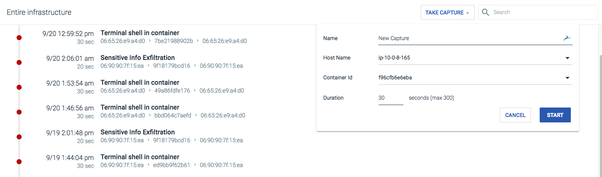
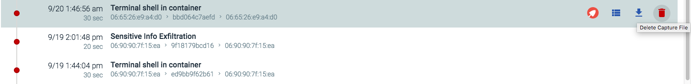
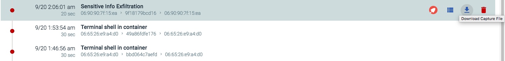

Captures
Sysdig capture files contain system calls and other OS events that can be analyzed with either the open-source sysdig or csysdig (curses-based) utilities, and are displayed in the Captures module.
The Captures module contains a table listing the capture file name, the host it was retrieved from, the time frame, and the size of the capture. When the capture file status is uploaded, the file has been successfully transmitted from the Sysdig agent to the storage bucket, and is available for download and analysis.
This section covers how to create capture files in Sysdig Secure.
Contents
Configure Capture Files
Store Capture Files
Sysdig capture files are stored in Sysdig's AWS S3 storage (for SaaS environments), or in the Cassandra DB (for on-premises environments) by default. To configure a custom S3 storage bucket, refer to the Configure a Custom S3 Capture Bucket documentation.
Create a Capture File
Capture files can be created in Sysdig Secure either by configuring them as part of a policy, or by manually creating them from the Captures module.
Note
For more information on creating a capture as part of a policy, refer to the Policies module documentation.
To manually create a capture file:\
From the
Capturesmodule, click theTake Capturebutton to open the capture creation window. Define the name of the capture.
Configure the host and container the capture file should record system calls from.
Define the duration of the capture. The maximum length is 300 seconds (five minutes).
Click the
Startbutton.
The Sysdig agent will be signaled to start a capture, and send back the resulting trace file. The file will then be displayed in the Captures module.
Delete a Capture File
From the
Capturesmodule, select the capture file to be deleted.Click the
Delete(trash can) icon: Click the
Yes(tick) icon to confirm deleting the capture, or theNo(cross) icon to cancel.
Review Capture Files
Review the Capture Event in the Policy Events Module
To review the event that caused the capture file's creation:
From the
Capturesmodule, select the capture file to be deleted.Click the
View Policy Event(list) icon:
Sysdig Secure will navigate to the Policy Events module, and display the exact event that caused the capture file.
Review the Capture File with Sysdig Inspect
To review the capture file in Sysdig Inspect:
From the
Capturesmodule, select the capture file to be deleted.Click the Inspect (Sysdig logo) icon to open Sysdig Inspect in a new browser tab:

Download a Capture File
To download a capture file:
From the
Capturesmodule, select the target capture file.Click the
Download(down arrow) icon to download the capture file.
The capture file will now be downloaded to the local machine.
Disable Capture Functionality
Sometimes, security requirements dictate that capture functionality should NOT be triggered at all (for example, PCI compliance for payment information).
To disable Captures altogether, edit the agent configuration file as described in Disable Captures.